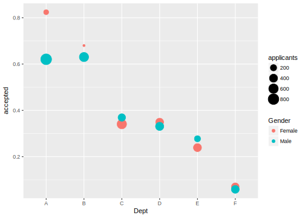

Chapter 8 Omitted Variable Bias
8.1 Prerequisites
This chapter uses the car data set in the car package.
library("car")
library("tidyverse")8.2 Simpson’s Paradox
Before considering the more general phenomena of omitted variable bias, we’ll discuss Simpson’s Paradox.7 This when a trend or relationship appears when data is disaggregated into groups, but that trend or relationship either disappears or reverses when the data are aggregated.
A famous real-world case of this Bickel, Hammel, and O’Connell (1975), which analyzes a claim of sex bias in graduate admissions against UC-Berkeley in the 1970s. In 1973, 8,442 men and 4,321 women applied for admission to Berkeley graduate programs. In aggregate, UC Berkeley admitted 44% of men and 35% of women applicants, seemingly supporting that claim. However, when the admissions rates were disaggregated by graduate department, the acceptance rates by department were not, on average, different. What is going on? On average, more women applied to more selective (higher rejection rate) departments than men.
The dataset datasets in the datasets package contains data for the largest 6 programs.
data("UCBAdmissions", package = "datasets")
admissions <- as_tibble(UCBAdmissions) %>%
spread(Admit, n) %>%
mutate(applicants = Admitted + Rejected,
accepted = Admitted / applicants)
ggplot(admissions, aes(x = Dept, y = accepted, size = applicants, colour = Gender)) +
geom_point()
select(admissions, Dept, Gender, applicants, accepted) %>%
arrange(Dept, Gender)## # A tibble: 12 × 4
## Dept Gender applicants accepted
## <chr> <chr> <dbl> <dbl>
## 1 A Female 108 0.82407407
## 2 A Male 825 0.62060606
## 3 B Female 25 0.68000000
## 4 B Male 560 0.63035714
## 5 C Female 593 0.34064081
## 6 C Male 325 0.36923077
## 7 D Female 375 0.34933333
## 8 D Male 417 0.33093525
## 9 E Female 393 0.23918575
## 10 E Male 191 0.27748691
## 11 F Female 341 0.07038123
## 12 F Male 373 0.05898123An interactive visualization is this UC Berkeley VUD Lab visualization: Simpson’s Paradox. Stop. Go to that link. Explore that visualization, and build your intution
For some other examples see Moore (2005), Wagner (1982), Wikipedia, Julious and Mullee (1994) (Kidney stone treatment).
8.3 Omitted Variable Bias
Suppose that the population model is, \[ Y_i = \beta_0 + \beta_1 X_i + \beta_2 Z_i + \epsilon_i , \] but given a sample, we run a regression with only \(\vec{x}\) and not \(\vec{z}\). \[ y_i = \hat{\beta}_0 + \hat{\beta}_1 x_i + \hat{\epsilon}_i . \]
What is the relationship between \(\beta_1\) and \(\hat{\beta}_1\)? Is \(\hat{\beta}_1\) an unbiased estimator of \(\beta_1\) ?
\[ \text{omitted variable bias} = (\text{effect of $Z_i$ on $Y_i$}) \times (\text{effect of $X_i$ on $Z_i$}) \]
What does the omitted variable bias An irrelevant variable is one that is uncorrelated with \(Y_i\), meaning that its population coefficient is 0. Suppose \(Z_i\) is an irrelevant variable, \[ Y_i = \beta_0 + \beta_1 X_i + 0 \times Z_i = \epsilon_i \]
In this case OLS is unbiased … \[ \begin{aligned}[t] \E(\hat\beta_0) &= \beta_0 \\ \E(\hat\beta_1) &= \beta_1 \\ \E(\hat\beta_2) &= 0 \end{aligned} \]
However, including an irrelevant variable will increase the standard errors for \(\hat{\beta}_1\). Why?
Consider the linear regression model, \[ Y_i = \beta_0 + \beta_1 X_i + \epsilon_i. \] What if we included \(X_i\) twice? \[ Y_i = \tilde\beta_0 + \tilde\beta_1 X_i + \tilde\beta_2 X_i + \epsilon_i. \] Clearly, any combination of \(\tilde\beta_1\) and \(\tilde\beta_2\) where \[ \tilde\beta_1 + \tilde\beta_2 =\beta_1 \] will fit the model as well as any other.
Consider cases of
- bivariate OLS with “effective” number of observations
- continuous OLS
| \(\Cov(X_1, X_2)\) | \(\Cov(X_2, Y) > 0\) | \(\Cov(X_2, Y) = 0\) | \(\Cov(X_2, Y) < 0\) |
|---|---|---|---|
| \(> 0\) \(0\) \(< 0\) | + 0 - | 0 0 0 | - 0 + |
In practice, this is the primary problem of many papers and papers. That is because it biases the coefficient of interest. Reviewers and discussants will often ask about whether you have considered “controlling” for insert variable here.
Although these may be legitimate concerns, not all reviewerss understand the purpose of controls variables so some of these may not be legitimate, and in fact harmful. There two arguments to consider when controlling for a variable.
The omitted variable has to plausibly be correlated with both the variable of interest and the outcome variable, and the burden is on the reviewers to provide at a confounding variable and plausible relationships. Simply stating that there could be an unobservable variable is trivially true, uninteresting, and not a fatal critique. That said, the plausibility of a causal claim would be higher if with methods less susceptible to unobserved confounders, such as experiments, instrumental variables, regression discontinuity, and difference-in-differences.
The omitted variable should be not be “post treatment” variable. If the omitted variable should not be one of the causal pathways by which \(X\) affects \(Y\), it should not be controlled for. If \(Z\) affects the values of \(X\) and also affects \(Y\), then it needs to be controlled for.
How to assess the potential magnitude of omitted variable bias?
Informal method. This is the methods that you see in many empirical papers. They estimate the model including different control variables. The less sensitive the coefficient(s) of the variables of interest are to the inclusion of control variables, the more plausible it is that the variable of interest also not sensitive to unobserved confounders (Angrist and Pischke 2014). Oster (2016) states
A common heuristic for evaluating the robustness of a result to omitted variable bias concerns is to look at the sensitivity of the treatment effect to inclusion of observed controls. In three top general interest economics journals in 2012, 75% of non-experimental empirical papers included such sensitivity analysis. The intuitive appeal of this approach lies in the idea that the bias arising from the observed controls is informative about the bias that arises from the unobserved ones.
Note that what is important is that the magnitude of the coefficient is stable to the inclusion of controls, not that the coefficient remains statistically significant.
Formal methods: Bellows and Miguel (2009) propose the following simple statistic to assess the magnitude of omitted variable bias: \[ \delta = \frac{\hat{\beta}_F}{\hat{\beta}_R - \hat{\beta}_C}, \] The statistic \(\delta\) is interpreted as the magnitude of covariance between the unobserved part of the controls and the treatment variable necessary to explain away the entire treatment effect of \(X\) on \(Y\). A larger ratio suggests it is implausible that omitted variable bias could explain away the entire observed effect. See Bellows and Miguel (2009 Appendix A) for the derivation. Nunn and Wantchekon (2011) provides a clear explanation and application of the statistic.
Often you will see works that add regressors sequentially and make some sort of implicit coefficient stability argument. That is not useful. The important comparison is between the coefficient when nothing (or only a small subset of covariates) is controlled for, and the full set of controls.
Bellows and Miguel (2009) themselves generalize Altonji, Elder, and Taber (2005) from binary to continuous treatment variables. Oster (2016) further generalizes the estimator. Pei, Pischke, and Schwandt (2017) show that if the covariates are measured with error, a “balancing test” (regressing the confounder on the treatment) is more powerful.
Methods such as matching, propensity scores, or inverse weighting still depend on assumptions about selection on observables. They may be less sensitive to “omitted variable bias” due to The differ from regression in the estimand or their sensitivity to model misspecification.
The preference for “design based” inference is mostly driven by a desire to find situations (designs) where other assumptions can substitute for the nigh impossible to test “selection on observables” assumption. Apart from experiments, these include instrumental variables, regression discontinuity, and difference-in-differences.
8.4 Measurement Error
8.4.1 What’s the problem?
It biases coefficients:
- Variable with measurement error: biases \(\beta\) towards zero (attenuation bias)
- Other variables: Biases \(\beta\) similarly to omitted variable bias. In other words, when a variable has measurement error it is an imperfect control. You can think of omitted variables as the limit of the effect of measurement error as it increases.
8.4.2 What to do about it?
There’s no easy fix within the OLS framework.
- If the measurement error is in the variable of interest, then the variable will be biased towards zero, and your estimate is too large.
- Find better measures with lower measurement errors. If the variable is the variable of interest, then perhaps combine multiple variables into a single index. If the measurement error is in the control variables, then include several measures. That these measure correlate closely increases their standard errors, but the control variables are not the object of the inferential analysis.
- More complicated methods: errors in variable models, structural equation models, instrumental variable (IV) models, and Bayesian methods.
Blackwell, Honaker, and King (2015) note that the easiest way to handle measurement error in the predictors is to treat them as missing data where you have extra information about their range. Suppose a covariate is observed as \(x \sim(x^*, \delta^2)\), where \(x^*\) is the true value, and \(\delta\) is the scale of the measurement error. Then missing values are the case when \(\delta \to \infty\). So missing values are special, extreme, case of measurement error. This means that we can use multiple imputation methods for dealing with missing values where we add additional information to restrict the plausible range of imputated values. The Amelia has built-in support for this, but the general idea could be adapted to other multiple imputation methods.
8.5 More Information
8.5.1 Simpson’s Paradox
- See Samuels (1993) for more discussion of Simpson’s Paradox
- Moore (2005) collects and succinctly describes several examples of Simpson’s Paradox
- An interactive visualization of the Simpson’s Paradox
- Horton. 2015. Fun with Simpson’s Paradox: Simulating Confounders
- Horton. 2012. Example 9.20: visualizing Simpson’s paradox
- See the Wikipedia Page
- US Median Wage by Education Level. Overall wages have risen, but within every group, the wage has fallen.
- Nielsen. Reinventing Explanation has a visual explanation of the Simpson’s paradox
- Gelman. Understanding Simpson’s Praradox Using a Graph. April 8, 2014. Discusses the Nielsen post, provides other visualizations, and notes how aggregation problems arise even in non-causal cases.
- Armstrong and Wattenberg (2014) introduce the Comet Chart for visualizing Simpson’s Paradoxes. See this page for code and examples, including an R implementation.
References
Bickel, P. J., E. A. Hammel, and J. W. O’Connell. 1975. “Sex Bias in Graduate Admissions: Data from Berkeley.” Science 187 (4175). American Association for the Advancement of Science (AAAS): 398–404. doi:10.1126/science.187.4175.398.
Moore, Tom. 2005. “Simpson or Simpson-Like Paradox Examples.” http://www.math.grinnell.edu/~mooret/reports/SimpsonExamples.pdf.
Wagner, Clifford H. 1982. “Simpson’s Paradox in Real Life.” The American Statistician 36 (1). Informa UK Limited: 46–48. doi:10.1080/00031305.1982.10482778.
Julious, S. A., and M. A. Mullee. 1994. “Confounding and Simpson’s Paradox.” BMJ 309 (6967). BMJ: 1480–1. doi:10.1136/bmj.309.6967.1480.
Angrist, Joshua D., and Jörn-Steffen Pischke. 2009. Mostly Harmless Econometrics: An Empiricist’s Companion. Pr.
2014. Mastering ‘Metrics. Princeton UP.Oster, Emily. 2016. “Unobservable Selection and Coefficient Stability: Theory and Evidence.” Journal of Business & Economic Statistics, September. Informa UK Limited, 0–0. doi:10.1080/07350015.2016.1227711.
Bellows, John, and Edward Miguel. 2009. “War and Local Collective Action in Sierra Leone.” Journal of Public Economics 93 (11–12): 1144–57. doi:10.1016/j.jpubeco.2009.07.012.
Nunn, Nathan, and Leonard Wantchekon. 2011. “The Slave Trade and the Origins of Mistrust in Africa.” American Economic Review 101 (7): 3221–52. doi:10.1257/aer.101.7.3221.
Altonji, Joseph G., Todd E. Elder, and Christopher R. Taber. 2005. “Selection on Observed and Unobserved Variables: Assessing the Effectiveness of Catholic Schools.” Journal of Political Economy 113 (1). University of Chicago Press: 151–84. doi:10.1086/426036.
Pei, Zhuan, Jörn-Steffen Pischke, and Hannes Schwandt. 2017. “Poorly Measured Confounders Are More Useful on the Left Than on the Right.” National Bureau of Economic Research. doi:10.3386/w23232.
Blackwell, M., J. Honaker, and G. King. 2015. “A Unified Approach to Measurement Error and Missing Data: Overview and Applications.” Sociological Methods & Research, June. SAGE Publications. doi:10.1177/0049124115585360.
Samuels, Myra L. 1993. “Simpson’s Paradox and Related Phenomena.” Journal of the American Statistical Association 88 (421). Informa UK Limited: 81–88. doi:10.1080/01621459.1993.10594297.
Armstrong, Zan, and Martin Wattenberg. 2014. “Visualizing Statistical Mix Effects and Simpson'\(\mathsemicolon\)s Paradox.” IEEE Transactions on Visualization and Computer Graphics 20 (12). Institute of Electrical; Electronics Engineers (IEEE): 2132–41. doi:10.1109/tvcg.2014.2346297.
However, omitted variable bias only makes sense as a concept when the regression has a causal or structural interpretation. Simpson’s paradox is an aggregation affect that can occur with conditioning even when there is no causal interpretation of the model.↩